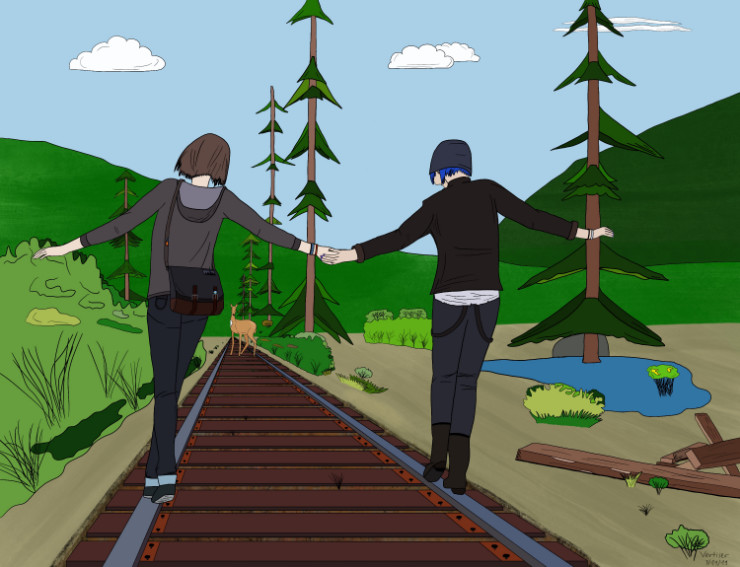

Recent Articles
-
Life is Strange photo wall (Max Caulfield memorial wall)
One of the things that enchanted me in Life is Strange was Max Caulfield photo memorial wall at Blackwell Academy. It was one of those small details that made me fall in love with this game, contributing to its unique atmosphere. The Polaroid wall in Max’s dorm room allows player to not only appreciate her photography skills, but also learn more about her personality. In some way it also reflects Max’s decisions, especially the ones made at the beginning of the game.
Ever since my first playthrough of the game, I’ve been thinking about recreating Max’s photo wall at home. The opportunity for that appeared in August 2019, when I was doing a renovation of my home office. I decided to dedicate a whole wall to Life is Strange. I want to share the final result with you, along with a small DIY tutorial on how to make Max photo wall that will look as similar to the in-game version as possible.
-
Catra and Adora (Catradora artwork from She-Ra)
-
Happy New Year 2020
-
Life is Strange comic book vol. 7 (Waves #3)
The previous issue of Life is Strange comic book has been, in my opinion, the best one yet. It was the first issue that I thoroughly enjoyed. Will the seventh one live up to its predecessor? Let’s find out!
-
Life is Strange comic book vol. 6 (Waves #2)
The new arc of Life is Strange comic book shows Max’s life after she had left her original timeline and looked for the one in which she could give Chloe happiness she deserved. It’s been two years since Max made her choice but she still struggles to accept it. Did she choose right?
-
Life is Strange comic book vol. 5 (Waves #1)
Today I read the fifth issue of Life is Strange comic book, the one opening a new story arc that is supposed to build on the foundations of Dust. Here you’ll find my thoughts on the new issue and its storyline.
-
The Raven's Path (a teaser chapter)
-
Max and Chloe (comic book style)

-
Life is Strange comic book vol. 4 (Dust #4)
It is done. I’ve read the fourth and the final issue of Life is Strange comic book, the one concluding the Dust story arc. Did Max manage to solve the mystery of parallel realities? What happened to Chloe?
-
Life is Strange comic book vol. 3 (Dust #3)
The second issue of Life is Strange comic book ended with a cliffhanger. I was seriously worried what would happen in the next volume and how Max would solve the mystery of the phenomena she had experienced.
Subscribe via RSS